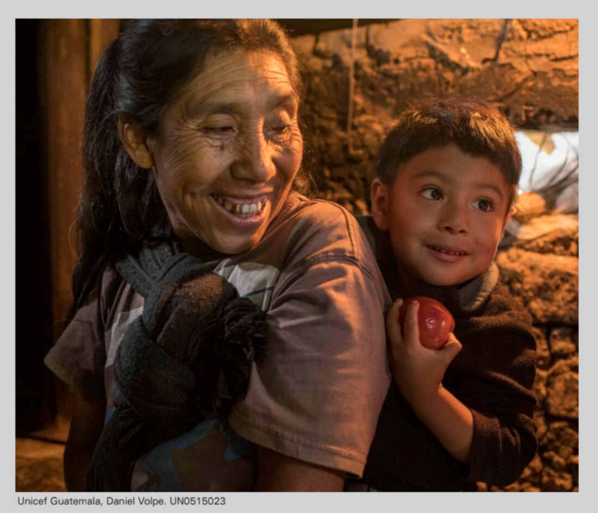
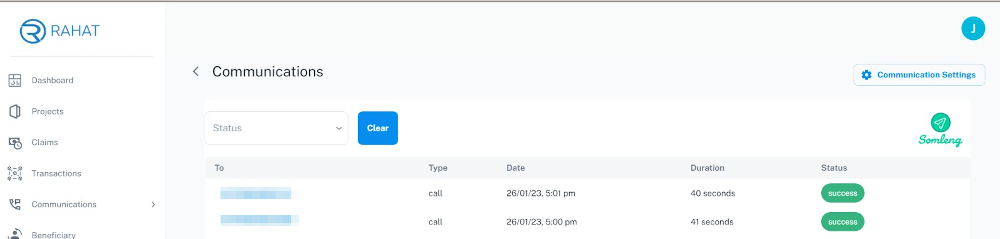

About the Early Warning System Watch it in action
Cambodia is a country consistently ranked as one of the most vulnerable to the effects of natural disasters.
In order to deliver timely and potentially lifesaving information to people in disaster prone areas, an Early Warning System (EWS) was conceived by the organization, People In Need (PIN) .
People in Need realized that the EWS needs to be accessible to all Cambodians, regardless of literacy and Internet connectivity issues. They decided to look into a solution which uses voice based messaging for alerts and Interactive Voice Response (IVR) for registration.
With help from the Royal Cambodian Government, the Telecommunication Regulator of Cambodia (TRC) and the National Committee for Disaster Management (NCDM), it was regulated that the Early Warning System must be provided free of charge by the Mobile Network Operators (MNOs) in Cambodia.
With the pieces of the puzzle coming together the problems that still remained were:
The major mobile network operators in Cambodia each provided a SIP connection, but lacked the technology that People In Need required to handle user registrations and send out automated flood alerts.

Somleng SCFM is an open source contact center platform and call flow manager designed for Somleng and Twilio. Somleng SCFM comes complete with its own REST API for managing contacts, callouts and phone calls and can be configured to send out alerts and listen for inbound calls through Somleng which provides an open source implementation of Twilio's REST API.
Unlike Twilio, Somleng gives you full control over where and how inbound and outbound calls are routed from/to. Somleng is configured to send out alerts and listen for inbound calls via SIP connections provided by the local mobile network operators.
To summarize the technology:

In Somalia returnee households from Dadaab refugee camp in Kenya and vulnerable households in Bay and Bakool received emergency unconditional cash-based transfer assistance package to help them meet their needs during the current drought period.
In order to share information and get feedback about the program, a voice-based messaging solution was proposed. In the proposal voice messages and surveys would be recorded in the Somali language and delivered to the household head by mobile phone calls.
The price for terminating a call through Twilio in Somalia is $0.7680 per minute . To date more than 75.8 K minutes worth of calls have been sent out which would equate to $58,238.98 on Twilio.
In order to reduce costs and promote local businesses, Africa's Voices Foundation in conjunction with UNICEF Somalia partnered with Hormuud , a local MNO in Somalia. In comparison, Hormuud's pricing is between $0.04 and $0.07 per minute.
Somleng SCFM was again used in this project to provide Africa's Voices Foundation with a dashboard for scheduling callouts and managing recipients. Automated voice messages were sent to beneficiaries via Somleng through Hormuud.
In Guatemala, 5 out of 10 children under six years old suffer from chronic child malnutrition. Early childhood, is the greatest window of opportunity to support the development of children's brains, bodies, and abilities through comprehensive interventions. Additionally, Guatemala is a multicultural and multilingual country, with 22 languages, including the Mayan, Spanish, Xinka and Garifuna. The use of the Spanish language has predominated in healthcare services, making it difficult for Mayan speaking population throughout the country to access public services every day.
With the objective of improving the nutritional conditions of children, adolescents, pregnant and lactating women, UNICEF Guatemala is coordinating with Government institutions at national, departmental and municipal level the implementation of comprehensive strategy to address stunting in Huehuetenango, Quiché, Chiquimula and Alta Verapaz.
Given the current situation of COVID-19, there are actions that must be adapted to the new scenario, including the use of innovative solutions to reach the population through virtual platforms. The use mobile technology as a catalyst tool can accelerate the achievement of nutritional results for Guatemalan children.
Corazón contento is a free-volunteer subscription mobile service that seeks to promote and strength early childhood development through a comprehensive intervention, with flexible models that take into account cultural differences and the reality of the country. Using text messages (SMS), social media, as well as voice messages (IVR) to provide an integrated package of information about: health, hygiene, sanitation, maternal nutrition, breastfeeding, complementary feeding and parenting guidelines directed delivered to caregivers (mothers, fathers) of children, as well as pregnant and lactating women and primary health care workers in seven native languages (Qʼeqchiʼ, Poqomchiʼ, Chʼortiʼ, Qʼanjobʼal, Chuj, Akateko and Ixil).
To this day, UNICEF Guatemala has achieved:
RapidPro is an open source software platform that allows for building and scaling mobile-based applications from anywhere in the world. RapidPro is designed to send personalized messages with responses analyzed in real-time.
Somleng is an open source cloud communications platform which can be used to deliver IVR messages through local mobile network operators.
Voice Messages are recorded into RapidPro and delivered to the beneficiary's phone via Somleng. Together RapidPro and Somleng are powering the way governments and development partners connect, engage and collaborate directly with the most important - and often most marginalized - voices in their communities.
In Mexico, Somleng is powering C3ntro Telecom's Cloud Communications Platform as a Service (CPaaS).
Somleng provides an open source, white-labeled, CPaaS solution for all types of carriers e.g. telecom companies, mobile network operators and aggregators.
C3ntro Telecom uses Somleng to provide their own custom branded CPaaS solution to their customers. Their customers can enjoy the power of programmable voice and SMS through Somleng's open source implementation of Twilio's REST API, while C3ntro keeps their branding.
By partnering with Somleng, C3ntro can offer a full-stack solution to their customers and therefore compete directly with the big tech providers such as Twilio and Vonage.
With feedback from C3ntro we have developed Somleng with an offering for Carriers, which includes a Carrier Dashboard and API.
For more info please checkout our Carrier Documentation .
People in Need (PIN)'s mHealth project, implemented in cooperation with the Ministry of Health (MoH) Zambia Telecommunications Company Limited (ZAMTEL) and powered by Somleng, is an innovative and one-of-a-kind intervention in Zambia.
The project uses voice recorded messages to overcome illiteracy barriers and to improve maternal and child health and nutrition outcomes, influence attitudes and enhance knowledge and skills of women about the importance of key health and nutrition behaviors. The messages were incorporated into dialogues performed by a local drama group that created culturally appropriate characters to provide an educative, engaging and entertaining service, effective at changing people's behaviors. These dialogues were designed typically around specific topics such as health, nutrition or hygiene. The set contains key messages related to maternal health and nutrition as well as nutrition and health of children aged 0-6 and 7-24 months.
The messages were designed to cover the most important behaviors in order to provide timely information that supports the mother to provide the best possible start to their child's life during the first 1000 days most critical days (from the inception until the child is 2 years old). The pilot project targeted 100 women in Mongu and Nalolo districts in Western Zambia and aimed to prove that the concept is relevant and effective in the Zambian context.
The study found that the mHealth intervention has had a significant impact on knowledge, attitudes and practices of women with regards to maternal and infant nutrition and health. The level of satisfaction suggests that the service fills an important gap, is effective at changing behaviors and is highly relevant in the Zambian context. The results suggest that the intervention contributed to improved maternal\ and child health outcomes and led to changes in key nutrition behaviors. With several upgrades and improvements, which are currently underway, the project indicators may improve further.
More info about the Mama Info health service can be found on their website https://www.mamainfo.org .
In January 2023, UNICEF Nepal launched a blockchain pilot to support 1,500 vulnerable households with cash distribution in the Madhesh province, Nepal . The cash distribution supports landless families, daily wagers and families with disabilities, with children under the age of five. The pilot uses an open-source blockchain based solution called, Rehat - developed by Rumsan , a UNICEF Venture Fund company, from Nepal.
This pilot sees a collaboration of two UNICEF Venture Fund portfolio companies, Rumsan and Somleng . Rahat is using Somleng's Carrier Bypass IVR feature . to support beneficiaries in the cash distribution pilot with information and later to receive feedback from the beneficiaries directly. This feature was developed by Somleng as part of the 2022 Growth Funding round by the UNICEF innovation fund.
